第 7 章 成像与衍射限成像仿真#
本章解决：相干与非相干成像的线性系统模型——相干成像对复振幅、非相干成像对辐照度分别满足卷积关系，对应的传递函数与光学传递函数由出瞳函数的缩放、反转或自相关给出；同时给出衍射限成像仿真的采样判据。学完能由光瞳参数计算点扩散函数与调制传递函数，并完成一幅图像的成像仿真。
7.0 本章导图#
7.1 几何成像概念(Geometrical Imaging Concepts)#
成像(imaging)就是把物体或场景的场——更常见的是辐照度图样——在像面(image plane)上复现出来。几何光学假设光线沿直线传播、不考虑衍射,是镜头与光学系统设计的常用工具,给出物像位置与大小之间的关系;但好的成像建模要几何光学 + 衍射理论两条腿走路:几何定位置与大小,衍射定清晰度的极限。
不是所有光学系统都成像——扩束镜把激光变大但不成像。要成实像(real image),必须把任意物点发出的光收集并会聚到像面上。图 7.1 的成像情形下,傍轴条件(光线与光轴夹角小)下"最佳聚焦"成像满足透镜定律的高斯形式(Gaussian lens law):
其中 \(f\) 是透镜(或透镜组)焦距,\(z_1\) 是物到前主平面(front principal plane)的距离,\(z_2\) 是后主平面(back principal plane)到像的距离。主平面是几何透镜分析里的虚拟概念,垂直于光轴:入射到前主平面上某高度的光线,从后主平面同一高度射出——主平面是"单位放大率"的平面。薄透镜的前后主平面与透镜平面重合;真实(厚)透镜的主平面一般在透镜附近但不重合。
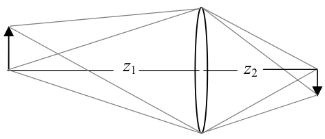
要成实像,\(z_1, z_2 > 0\) 且 \(f > 0\)。正透镜(positive lens)(\(f>0\))会聚光线,负透镜发散光线。实用系统常用多片透镜组控制像差或方便排布,但组合焦距仍必须是正的才能成像。
像高 \(y_2\) 与物高 \(y_1\) 之比叫横向放大率(transverse magnification)\(M_t\),单透镜系统:
负号表示倒像(\(y_2\) 取负值,图 7.1 里箭头朝下)。
成像系统还用**瞳(pupil)**刻画。瞳是虚拟孔径:入瞳(entrance pupil, EP)表示系统从物体方向看到的"收集开口",出瞳(exit pupil, XP)表示光离开系统去成像时的"出口开口"。瞳是孔径光阑(aperture stop)——限制收光的那个真实元件——经它前/后的光学元件所成的像。图 7.1 里透镜本身就是光阑;换个系统也可能是别的孔径。这里最关心光阑的一点:它把入射场"切成饼干",是像里基本衍射效应的来源——像差等别的因素会进一步破坏图像,但光阑造成的衍射是成像系统的根本性能极限。光阑与系统其他效应都可以折进瞳里,所以衍射分析统一用瞳这个概念。
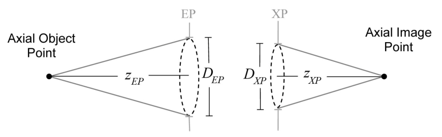
图 7.2 的模型里,EP/XP 的先后次序与位置取决于具体系统。单薄透镜系统(图 7.1)最简单:主平面、瞳、透镜全在同一平面,\(z_1 = z_{EP}\)、\(z_2 = z_{XP}\)、\(D_{EP} = D_{XP} =\) 透镜直径——想本章例子时退回这个情形即可。但要想远一点:图 7.3 里光阑是透镜后面的光圈(iris),XP 与光圈重合同径,EP 是把光圈"反着穿过"透镜成像得到的虚拟孔径——这时瞳距与主面距就不同了。
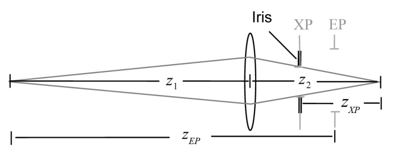
收集光量、像差系数、图像空间频谱含量等表达式里反复出现的参数是 f 数(f-number,\(f/\#\))——第 6 章介绍过。本章最有用的形式是傍轴工作 f 数(paraxial working f-number):
它是"XP 到轴上像点那束光锥"的参数化(图 7.2)。
几何光学讨论的要点小结:
- (a) 主面距离 \((z_1, z_2)\) 决定像的横向放大率。
- (b) 系统孔径光阑带来像里基本的衍射效应。
- © 瞳的大小 \((D_{EP}, D_{XP})\) 与距离 \((z_{EP}, z_{XP})\) 进入系统的衍射分析。
- (d) 薄透镜成像系统:\(z_1 = z_{EP}\)、\(z_2 = z_{XP}\)、\(D_{EP} = D_{XP} =\) 透镜直径。
主面、瞳与几何成像的更多讨论见原书参考文献 1-3(Dereniak 几何光学、Smith 现代光学工程、Geary 镜头设计)。
拓展:工作 f/# 与第 6 章的 f/# 什么关系?
第 6 章的 \(f/\# = |f|/D_L\) 是"平行光聚焦"情形:物在无穷远,像距 \(z_2 = f\),所以工作 \(f/\# = z_{XP}/D_{XP} = f/D_L\),两者一致。差别的适用范围:有限共轭成像(物在有限远,\(z_2 \neq f\))时,\(f/D_L\) 不再描述聚焦光锥,必须用式 (7.3) 的工作 f 数。习题 7.1 就是例子:同一枚 f/2.5 的透镜(\(f=50\) mm、\(D=20\) mm),物距 200 mm 时工作 \(f/\# = 66.7/20 = 3.33\)。遥感卫星那类"物方"问题(习题 7.8)则干脆用物方 \(f/\#_{OBJ} = z_{EP}/D_{EP}\)。
7.2 相干成像(Coherent Imaging)#
7.2.1 相干成像理论#
现在上傅里叶光学。一般成像布置见图 7.4:物面坐标 \((x,y)\)、像面坐标 \((u,v)\)、出瞳函数 \(P(x,y)\)。相干照明(比如激光)下的成像,最简形式是场经过卷积:
\(u, v\) 是像面空间坐标,\(U_i\) 是像面场,\(h\) 是系统的相干冲激响应(coherent impulse response)。\(U_g\) 是几何光学预言的理想几何像场(ideal geometrical-optics predicted image field)——物场 \(U_o(x,y)\) 的缩放副本:
\(M_t\) 为负(式 7.2)时,\(U_g\) 相对物体是倒的。式 (7.4) 的意思:理想几何像被冲激响应"模糊"一次。变换到频域:
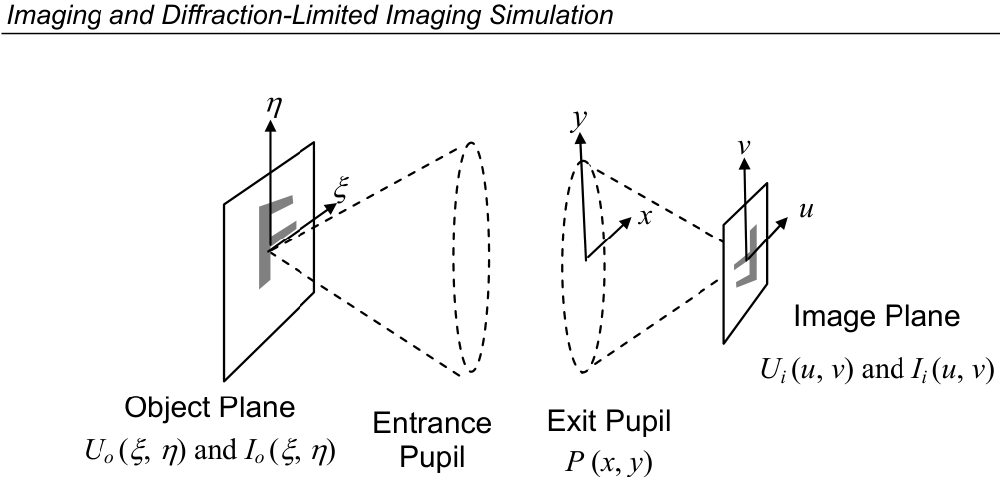
其中 \(H\) 叫相干传递函数(coherent transfer function),或振幅传递函数(amplitude transfer function)[4]:
一句话:相干传递函数就是出瞳函数,按 \(-\lambda z_{XP}\) 缩放并反转。为什么能这么简单?三条评注:
- (a) 瞳宗量里的负号给出一个缩放且反转的瞳——与式 (7.5) 里 \(M_t\) 的倒像相对应。
- (b) 假定对任何物点发出的波,XP 都理想地产生会聚到像点的球面波;瞳函数是相对理想球面波前定义的。偏离球面的波前误差用瞳里的复指数项描述——第 8 章的内容。
- © 衍射限(diffraction limited)指瞳函数完美、只有瞳的边界参与衍射效应的系统。本章全是衍射限系统。
拓展:式 (7.7) 为什么是"瞳的缩放反转"?
第 5 章夫琅禾费传播(式 5.16)已经算过一次:出瞳后,像点近旁的场是出瞳场的夫琅禾费图样,频率坐标与瞳面坐标差一个尺度 \(\lambda z_{XP}\),方向倒置(倒像)。所以"频率平面里的瞳"就是 \(P(-\lambda z_{XP} f_U, -\lambda z_{XP} f_V)\):频率 \(f_U\) 越高,对应瞳面上离轴越远的点——瞳半径 \(w_{XP}\) 卡住的最大频率自然是 \(f_0 = w_{XP}/(\lambda z_{XP})\),见式 (7.10)。这一句话在第 6 章也出现过一次:焦面(无穷远物的像面)= 夫琅禾费图样,当时瞳面就是透镜面。
7.2.2 相干传递函数例子#
方瞳。定义
代入式 (7.7):
rect 是偶函数,负号可忽略。沿 \(u\) 或 \(v\) 方向的相干截止频率(coherent cutoff frequency):
\(|f| > f_0\) 的空间频率不会保留在像面场里。
圆瞳。
\(w_{XP} = D_{XP}/2\)。相干传递函数
即
\(f_0\) 仍是式 (7.10) 的相干截止。与方瞳不同,圆瞳的截止在频率平面各径向方向一致。
circ 的两套约定(全书坑,这里再落地一次)
式 (7.11) 按 Goodman 约定书写:宗量分母 \(w_{XP}\) 就是半径;书附录 C.1 代码 out=abs(r)<=1 同样约定(宗量预先除好半径)。表 1.2 的 circ 印刷定义对应"分母 = 2×半径"(ch1 勘误,差 2 倍半径)。本笔记 Python 统一用公共模块 base.circle(X, Y, R)(直接传半径),MATLAB 侧用本目录 circ.m(附录 C.1 原样):H=circ(sqrt(Fu.^2+Fv.^2)/f0) 里的 f0 就是"半径"。照表 1.2 抄实现,瞳会大一倍。
辐照度的频率翻倍。观测或记录相干像时,实际测量的是辐照度 \(I_i = |U_i|^2\)。平方操作让辐照度图像理论上获得至多两倍于场的频率内容——想想恒等式 \(\cos^2(2\pi bx) = \frac{1}{2}[1+\cos(2\pi \cdot 2b\,x)]\):频率 \(b\) 的条纹平方后出现 \(2b\) 的分量。所以辐照度图像要考虑的截止是
用 \(2w_{XP} = D_{XP}\) 与式 (7.3):
7.2.3 衍射限相干成像仿真#
基于式 (7.4) 的计算机仿真实现:
仿真从一幅采样的"理想"图像开始(通常是一个图像文件),设采样间隔 \(\Delta u\)、边长 \(L\)。理想图像里最高的空间频率是奈奎斯特频率 \(f_N = 1/(2\Delta u)\),衍射限仿真要求
原因:理想图像里没有的频率,仿真也造不出来。代入式 (7.15)、解出采样间隔与边长约束:
式 (7.17) 相当苛刻。算个例子:薄透镜直径 12.5 mm、焦距 125 mm、\(\lambda = 0.5\ \mu\text{m}\)、\(250\times250\) 阵列。f 数:
代入式 (7.18):
边长约束:
像面尺寸被限制在 \(0.625\times0.625\) mm——很小。换 \(2048\times2048\) 阵列也不过 \(5.12\times5.12\) mm。这说明:傅里叶光学成像仿真考察的是像面上"近衍射限性能"的一小块;想覆盖 10-20 mm 量级的视场,阵列要非常大。
拓展:式 (7.17) 的第二张面孔——FFT 自相关的免缠绕条件
式 (7.17) 除了"辐照度频率要能表示",还有一层离散傅里叶的隐藏身份:7.3 节的 OTF 要用 FFT 算自相关,FFT 卷积/自相关是循环的——真自相关(支撑 \(2f_0\))加周期延拓(副本间距 \(1/\Delta u = 2f_N\))无重叠的条件是 \(2f_0 \leq 2f_N - 2f_0\),整理正是 \(2f_0 \leq f_N\)。违反会怎样?本章 Python 把系统改到 f/4(\(2f_0 = 5\times10^5 > f_N\)):FFT-OTF 与式 (7.31) 解析值的最大差从 f/10 的 \(3.3\times10^{-3}\) 恶化到 \(7.9\times10^{-2}\),高频区被"从对面绕回来"的副本污染(图 7-P9 右)。所以式 (7.17) 是仿真同时保住图像采样与 OTF 计算的双重条件。
先解决理想图像。原书用一幅 \(250\times250\) 像素的 USAF 1951 分辨率测试板 .png(实物的测试板印在玻璃基板上,至今仍用于镜头测试),下载地址已失效;网上可以找到类似图,或自己造一幅特征尺寸丰富的图。书脚本读入后的理想图像(书图 7.5):
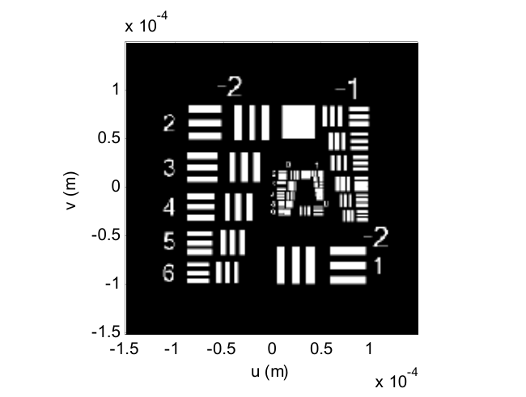
本章笔记用脚本生成同规格的 USAF 式分辨率板(下节代码直接读它):
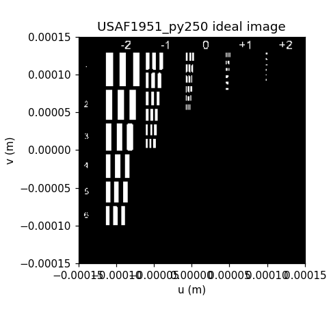
原书图表口径:USAF 板的实际缩放
书判读"组-2/单元6 条纹周期约 \(1\times10^{-5}\) m(即 1e5 cyc/m)"——这依赖他用的 PNG 映射到 0.3 mm 后的实际缩放,并不是 USAF 1951 的标称频率(标称组-2 只有零点几 lp/mm)。书 7.3.3 节又判读组-1/单元3 约 \(1.7\times10^5\) cyc/m。笔记的自制板按 USAF 相对标尺(相邻单元 ×\(2^{1/6}\)、相邻组 ×2)锚定组-2/单元6 = 1e5 cyc/m,与书的判读一拍即合;组-1/单元3 在自制板上为 \(1.41\times10^5\) cyc/m(书板 1.7e5,同一量级),所有定性结论一致。另外原书说"归一化后该图只含 0 和 1,sqrt 不起作用"——笔记的板也二值化,保持同一条讨论成立。
MATLAB 新建脚本 coh_image:
% ===== 书 7.2.3 节:coh_image 相干成像例子(逐行忠实 + 中文注释) =====
% 完整脚本见 matlab/fourier/ch7/coh_image.m;先跑 make_usaf_chart.m
% 生成 USAF1951_py250.png(替代已失效的原书下载文件)。
% 实现式 (7.16):Ui = F^-1{H * F{Ug}},H = circ(sqrt(Fu^2+Fv^2)/f0)
% (式 7.13)。参数:f/10、L=0.3 mm、M=250 -> du=1.2 um(满足式 7.18);
% 频率盘点:fN=4.17e5、2f0=2e5、f0=1e5 cyc/m(式 7.17 满足,裕量 2.08)。
% 图 7.5/7.6/7.7/7.8 对应 figure(1)/(2)/(3)/(4)。
% MATLAB/Python 差异:
% - 第 30 行 H.*.99 是 MATLAB 7.1 画不动单位高圆面的显示补丁;
% - 书第 34 行 xlabel('fv')/ylabel('fu') 与 surf(fu,fv,...) 的轴映射
% 相反(圆瞳下无影响;矩形瞳习题 7.3 必须改正,本文件已改对);
% - vindex=round(vvalue/du+(M/2+1)):1-based;numpy 是 M//2+round(...);
% - circ 是附录 C.1 函数(out=abs(r)<=1,Goodman 半径约定,本目录提供)。
% ------------- 以下为书原代码(节选,第 1-51 行) -------------
% coh_image Coherent Imaging Example
A=imread('USAF1951_py250','png'); %read image file
[M,N]=size(A); %get image sample size
A=flipud(A); %reverse row order
Ig=single(A); %integer to floating
Ig=Ig/max(max(Ig)); %normalize ideal image
ug=sqrt(Ig); %ideal image field
L=0.3e-3; %image plane side length (m)
du=L/M; %sample interval (m)
u=-L/2:du:L/2-du; v=u;
lambda=0.5*10^-6; %wavelength
wxp=6.25e-3; %exit pupil radius
zxp=125e-3; %exit pupil distance
f0=wxp/(lambda*zxp); %cutoff frequency
fu=-1/(2*du):1/L:1/(2*du)-(1/L); %freq coords
fv=fu;
[Fu,Fv]=meshgrid(fu,fv);
H=circ(sqrt(Fu.^2+Fv.^2)/f0);
H=fftshift(H);
Gg=fft2(fftshift(ug));
Gi=Gg.*H;
ui=ifftshift(ifft2(Gi));
Ii=(abs(ui)).^2;
vvalue=-0.8e-4; %select row (y value)
vindex=round(vvalue/du+(M/2+1)); %convert row index
plot(u,Ii(vindex,:),u,Ig(vindex,:),':');
# ===== 书 7.2.3 节:coh_image(完整脚本见 python/fourier/ch7/ch7_coh_image.py) =====
# 公共积木:coords(坐标)、circle(圆盘)来自 python/fourier/common/base.py;
# 相干传递函数与成像管线在 ch7_imaging.py(H_circ / coh_image)。
from base import coords
from ch7_imaging import freq_coords, H_circ, coh_image
from ch7_usaf_chart import ensure_chart, L_IMG, N_PX
A = ensure_chart() * 255.0 # 书第 3 行 imread(0..255)
A = np.flipud(A) # 书第 5 行:底行 -> 负 v(图像顶行在前的存储约定)
Ig = A / A.max() # 书第 6-7 行:归一化
ug = np.sqrt(Ig) # 书第 9 行:辐照度 -> 场幅度(二值图无差别)
L, M = L_IMG, N_PX # 0.3 mm、250
du = L / M # 1.2 um
u, _ = coords(L, M) # 书第 12 行
lam, wxp, zxp = 0.5e-6, 6.25e-3, 125e-3
f0 = wxp / (lam * zxp) # 书第 22 行:1e5 cyc/m
fu = freq_coords(L, M) # 书第 24 行:-1/(2du) : 1/L : 1/(2du)-1/L
H = H_circ(fu, f0) # = circle(FU,FV,f0) = circ(sqrt(Fu^2+Fv^2)/f0)
ui, Gi = coh_image(ug, H) # 书第 35-38 行:fftshift -> fft2 -> 乘 H -> ifft2
Ii = np.abs(ui) ** 2 # 书第 39 行
row = M // 2 + int(round(-0.8e-4 / du)) # 书第 48-49 行(v=-0.8e-4 m;0-based)
仿真结果:图 7.5 是理想图像(书图 7.5,笔记版见图 7-P1);图 7.6 是相干传递函数——半径 \(f_0\) 的频率圆盘。数值盘点:\(f_N = 1/(2\times1.2\ \mu\text{m}) = 4.17\times10^5\) cyc/m,\(2f_0 = 1/(0.5\ \mu\text{m}\cdot10) = 2\times10^5\)、\(f_0 = 1\times10^5\) cyc/m,式 (7.17) 满足。若式 (7.17) 被违反,图 7.6 的瞳圆会超过阵列一半。书代码里 surf + 光照的组合是为了把 \(H\) 显示得更立体;MATLAB 7.1 的 surf 画不动单位高度的圆面,所以乘 0.99——新版 MATLAB 不需要。
原书代码标注不一致:surf 的轴标签与 0.99 补丁
两处:(1) 书第 30 行 surf(fu,fv,H) 之后第 34 行写 ylabel('fu (cyc/m)'); xlabel('fv (cyc/m)')——surf 的第一参数 \(f_u\) 应配 x 轴,标签写反了。圆瞳下 \(H\) 各向同性,显示无恙;矩形瞳(习题 7.3)照抄的话曲面和像的 x/y 就整个标反。本笔记 MATLAB 文件已按正确映射写。(2) 书第 30 行 H.*.99:MATLAB 7.1 的 surf 画不动单位高度的圆面,乘 0.99 是当年显示权宜之计,新版 MATLAB 直接删掉即可。
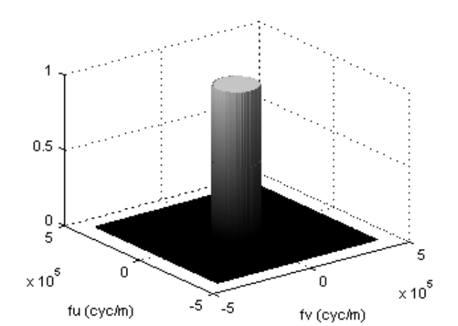
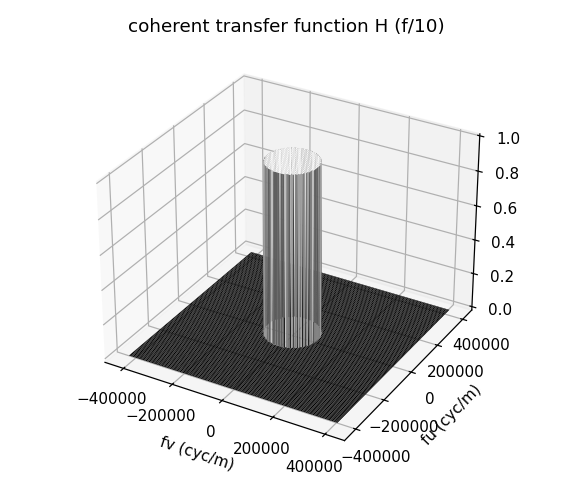
仿真出的像见图 7.7(显示时对辐照度开平方 nthroot(Ii,2) 提亮对比度):特征被模糊,一些三条组分辨不开;相长/相消干涉造成"振铃(ringing)"。
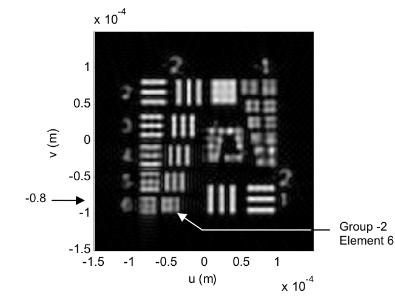
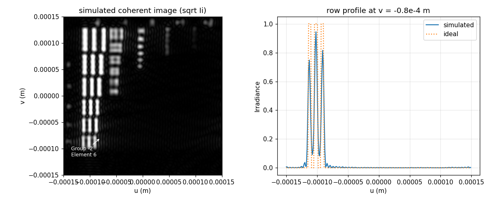
最后一段代码画剖面:先选一个物理 \(v\) 坐标(vvalue),用 round 找最近的阵列行号,把理想与模拟剖面叠画。图 7.8 里组-2/单元6 是"能分辨"的最小组:放大剖面看,它的三条竖纹周期约 \(1\times10^{-5}\) m,对应 \(1\times10^5\) cyc/m——正好是相干截止 \(f_0\)。虽然辐照度取了平方(频率可以到 \(2f_0\)),这种模拟相干辐照度图像的表观分辨率通常仍贴近相干截止。
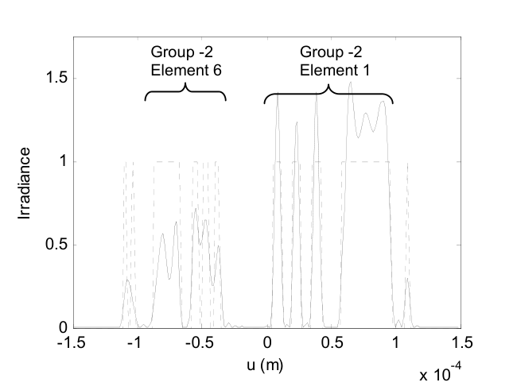
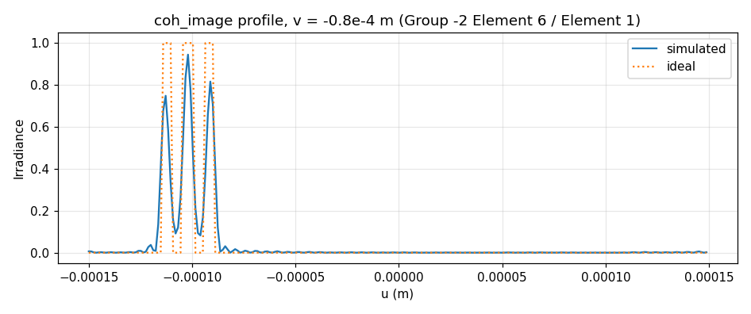
本章 Python 复现的定量检查(\(L=0.3\) mm、\(M=250\),其余参数同书):
- 场谱支撑:像面场的频谱 \(|G_i|\) 的最大半径 = 1.000e5 cyc/m,与 \(f_0\) 逐位一致——瞳圆盘把谱拦得干干净净;
- 辐照度谱支撑:\(|\mathfrak{F}\{I_i\}|\) 的最大半径 = 2.000e5 cyc/m,与 \(2f_0\) 逐位一致——"平方使频率翻倍"不只是一句恒等式;
- 组-2/单元6 条纹周期实测 10.8 μm(9.26e4 cyc/m ≈ \(f_0\),书判读 1e5);
- 相干振铃:组-2/单元1 大条边缘过冲峰值 1.50(理想 1.0)。
图 7.9 给出不同瞳径/f 数的谱(对数显示)与像:f/5(\(f_0 = 2\times10^5\))接近理想、f/20(\(f_0 = 0.5\times10^5\))几乎全糊——注意理想图像的 \(f_N = 4.17\times10^5\) 不变,变的是瞳。
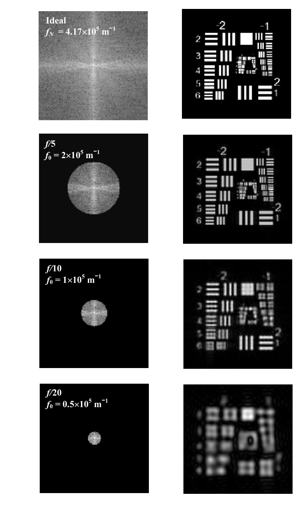
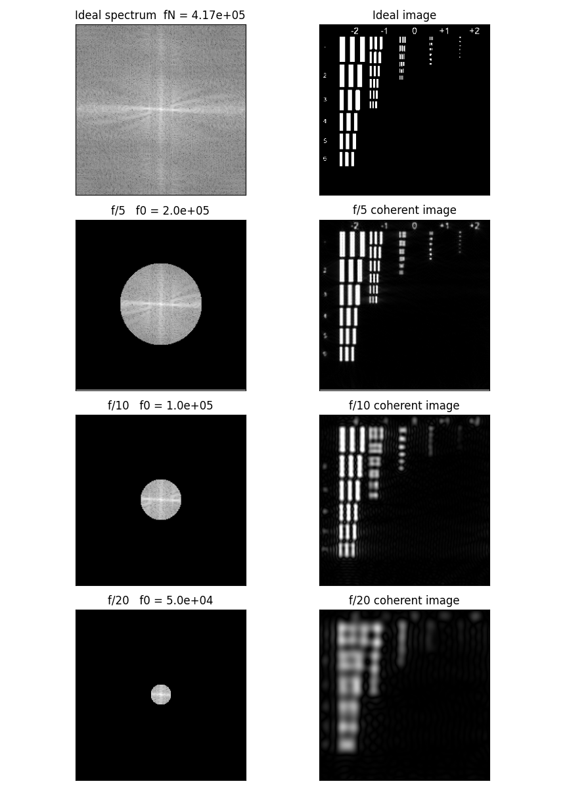
7.2.4 粗糙物体(Rough Object)#
前面的测试板是"二值"物体:场幅度非 0 即 1,相位处处为 0。但真实物体被相干光照明时,微观表面对衍射场影响巨大:多数表面相对光波长是"粗糙"的——凹坑与凸起反射的波相位差显著。最简单的建模:给物体(理想图像)场乘一个随机复指数相位:
rand 产生 \([0,1)\) 均匀分布的 \(M\times M\) 随机数,乘 \(2\pi\) 后覆盖所有相位值 \([0,2\pi]\)——每个样本点的相位独立且互不相关,代表相对光波长"极粗糙"的随机表面。跑出的辐照度图像见图 7.10:各点发出的子波相干干涉,形成 speckle(相干斑)——随机的一堆斑点、点与小曲线。相干斑是著名现象[5]:拿激光笔照墙、轻轻移动光斑或歪一下头,看到的闪烁就是 speckle。图 7.10 说明:speckle 会严重妨碍从图像里解读信息。
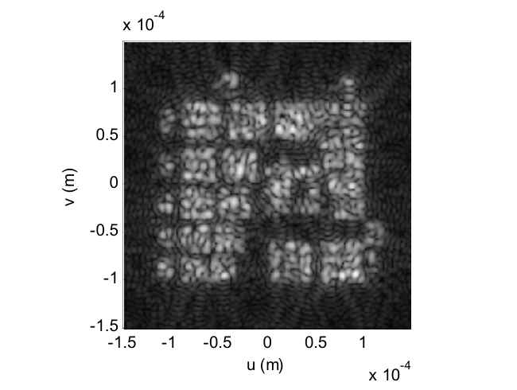
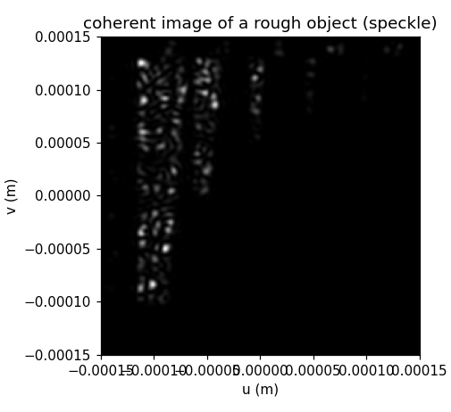
本章 Python 复现还把 speckle 定量化(固定随机种子):
- 对比度 \(C = \mathrm{std}(I_i)/\langle I_i\rangle\):均匀照明的极粗糙物体实测 0.998——充分发展 speckle 的理论值 1(辐照度服从指数分布),逐位吻合;
- 习题 7.5 会看到:粗糙度调小,\(C\) 断崖下跌(\(\pi\) → 0.20、\(0.4\pi\) → 0.03);孔径变小,\(C\) 不变但颗粒变大(约 \(1.22\lambda(f/\#)\))。
7.3 非相干成像(Incoherent Imaging)#
7.3.1 非相干成像理论#
把物体想象成一堆随机辐射的点源。物体可能被太阳之类的光源照亮,但最终离开物体表面的场包含一段波长谱、相位随时间随机变化——这种源产生的干涉条纹不稳定、变化极快,被响应"时间平均场模平方"的传感器平均掉。完全非相干光(perfectly incoherent light)指各辐射点源的复场相量随机独立:不同点、不同时刻之间没有关联。直观图像:图 7.10 里的 speckle 在时间上随机快速变化,平均够久,图像纹理趋于平滑。
非相干照明的线性空间不变成像模型[4]:
\(h\) 与式 (7.4) 里的相干冲激响应相同,\(I_g\) 是理想几何辐照度像。对比:相干成像对场线性,非相干成像对辐照度线性。冲激响应 \(|h(u,v)|^2\) 通称点扩散函数(point spread function,PSF)。这里的讨论限于波长分布在中心波长 \(\lambda\) 附近很窄的光。
对应式 (7.23) 的谱关系:
\(\mathcal{H}\) 叫光学传递函数(optical transfer function,OTF)。按惯例 OTF 归一为
对分子用傅里叶自相关定理:OTF 是相干传递函数 \(\mathcal{H}\cdots\)准确说是 \(H(f_U,f_V)\)——的归一化自相关。归一化把 OTF 在零频 \((f_U,f_V)=(0,0)\) 处定标为 1:OTF 不再承担"改变理想几何像总光功率"的职责。简写记号(★ 表示相关):
拓展:为什么"平方 → 自相关"?
相干路径:谱上乘 \(H\)(式 7.6);非相干路径:辐照度 \(I_i = |U_i|^2\),两个共轭场相乘 → 谱上等于 \(G_i\) 与 \(G_i^*\) 的卷积 → 域上就是 \(H(f)\) 与 \(H^*(f'-f)\) 的自相关(式 7.25/7.26)。直接后果:非相干截止是相干的两倍(\(H\) 的支撑半径 \(f_0\),自相关的支撑半径 \(2f_0\)),OTF 在零频恒为 1,衍射限 OTF 还处处非负(\(|\text{自相关}| \geq 0\))——像差系统(第 8 章)的 OTF 才会出现负值。
7.3.2 光学传递函数例子#
方瞳。从式 (7.9) 出发,先求傅里叶变换再取模平方:
对式 (7.27) 做逆变换(自相关定理),得自相关函数:
去掉前导乘子(零频归一),OTF 就是
这个 OTF 的非相干截止频率(incoherent cutoff frequency)
是该孔径相干截止的两倍——与式 (7.14) 的口径一致。
拓展:式 (7.27) 里的 (u,v) 是谁?
这一步把 \(H(f_U,f_V)\) 当作 \((f_U,f_V)\) 的函数做 FT,共轭变量记成了 \((u,v)\)——冲激响应空间的坐标,不是像面辐照度 \(I_i\) 的坐标。链条是:\(H\) 的逆变换是 \(h\)(相干冲激响应),所以 \(|\mathfrak{F}\{H\}|^2 = |h|^2 = \mathrm{PSF}\),再对 PSF 做逆变换回到频率域就是自相关(式 7.28)。两次变换方向相反、量纲互逆,中间那步的 \((u,v)\) 只在推导里露一面,别把它当成像面坐标。
圆瞳。式 (7.13) 的归一化自相关没有闭式初等表达,书用图解相关的办法[4]:两个半径 \(f_0\) 的圆盘错开 \(\rho\) 时的重叠面积(两个圆冠)除以圆盘面积:
其中 \(\rho = \sqrt{f_U^2+f_V^2}\),非相干截止
与方瞳的硬边三角形不同,圆瞳 OTF 是各向同性的平滑"圆冠",在截止 \(2\rho_0\) 处以零斜率触地。
拓展:式 (7.31) 的几何推导(两圆重叠面积)
半径 \(f_0\) 的圆盘与自身错开 \(\rho\):重叠区 = 两个圆冠。单个圆冠面积 = \(f_0^2\arccos(\rho/2f_0) - (\rho/2)\sqrt{f_0^2-(\rho/2)^2}\),两冠合计 = \(2f_0^2\arccos(\rho/2f_0) - \frac{\rho}{2}\sqrt{4f_0^2-\rho^2}\)。除以圆盘面积 \(\pi f_0^2\),整理: \(\frac{2}{\pi}[\arccos(\rho/2f_0) - (\rho/2f_0)\sqrt{1-(\rho/2f_0)^2}]\)——式 (7.31)。自相关在零移位处 = 总面积 → 归一化后 OTF(0) = 1;支撑到 \(\rho = 2f_0\)(错开两个半径就完全不重叠)。
7.3.3 衍射限非相干成像仿真#
基于式 (7.23) 的实现:
形式与相干情形相同(OTF 本来就来自相干传递函数),判据式 (7.17) 依然适用。脚本 incoh_image 用与 7.2.3 节相同的参数:
% ===== 书 7.3.3 节:incoh_image 非相干成像例子(逐行忠实 + 中文注释) =====
% 完整脚本见 matlab/fourier/ch7/incoh_image.m。
% 关键行(第 22-23 行):OTF = ifft2(abs(fft2(fftshift(H))).^2) 再除零频值
% ——FFT 自相关定理(式 7.25/7.26),OTF 故意留在 FFT 排列(不 fftshift),
% 与第 32 行 fft2(fftshift(Ig)) 同排列,直接逐点相乘(书评注 c)。
% 第 36 行:real + 负值清零(数值噪声,书评注 d)。
% 图 7.11/7.12/7.13 对应 figure(2)/(3)/(4)。
% MATLAB/Python 差异:OTF(1,1) 是 1-based 零频样本;numpy 写 OTF[0,0]。
% ------------- 以下为书原代码(节选,第 1-48 行) -------------
% incoh_image Incoherent Imaging Example
A=imread('USAF1951_py250','png'); %read image file
[M,N]=size(A); %get image sample size
A=flipud(A); %reverse row order
Ig=single(A); %integer to floating
Ig=Ig/max(max(Ig)); %normalize ideal image
L=0.3e-3; %image plane side length (m)
du=L/M; %sample interval (m)
u=-L/2:du:L/2-du; v=u;
lambda=0.5*10^-6; %wavelength
wxp=6.25e-3; %exit pupil radius
zxp=125e-3; %exit pupil distance
f0=wxp/(lambda*zxp); %coherent cutoff
fu=-1/(2*du):1/L:1/(2*du)-(1/L); %freq coords
fv=fu;
[Fu,Fv]=meshgrid(fu,fv);
H=circ(sqrt(Fu.^2+Fv.^2)/f0);
OTF=ifft2(abs(fft2(fftshift(H))).^2);
OTF=OTF/OTF(1,1);
Gg=fft2(fftshift(Ig)); %convolution
Gi=Gg.*OTF;
Ii=ifftshift(ifft2(Gi));
%remove residual imag parts, values < 0
Ii=real(Ii); mask=Ii>=0; Ii=mask.*Ii;
vvalue=0.2e-4; %select row (y value)
vindex=round(vvalue/du+(M/2+1)); %convert row index
plot(u,Ii(vindex,:),u,Ig(vindex,:),':');
# ===== 书 7.3.3 节:incoh_image(完整脚本见 python/fourier/ch7/ch7_incoh_image.py) =====
from ch7_imaging import H_circ, otf_from_H, incoh_image # 逐行对应书 21-23/32-36 行
Ig = ensure_chart(); Ig = np.flipud(Ig); Ig = Ig / Ig.max()
L, M = L_IMG, N_PX
du = L / M
lam, wxp, zxp = 0.5e-6, 6.25e-3, 125e-3
f0 = wxp / (lam * zxp) # 书第 16 行:相干截止
fu = freq_coords(L, M)
H = H_circ(fu, f0) # 书第 21 行
OTF = otf_from_H(H) # 书第 22-23 行(ifft2(|fft2(fftshift(H))|^2)/OTF[0,0])
Ii = incoh_image(Ig, OTF) # 书第 32-36 行(real + 负值清零)
row = M // 2 + int(round(+0.2e-4 / du)) # 书第 45-46 行(v=+0.2e-4 m)
书代码的四条评注:(a) 第 7 行要用 \(I_g\) 而不是 \(U_g\);(b) 第 22 行 OTF 用自相关定理算;© 第 23 行除以自相关的零频值归一,且 OTF 留在移位排列;(d) 第 36 行算出的 \(I_i\) 本应为正实数,数值精度会带来小的虚部/负值——imagesc 和 plot 不认,置零即可。
衍射限 OTF 见图 7.11,像见图 7.12。与相干像(图 7.7)相比:分辨率更好(看组-1/单元3 的三条),而且没有振铃。图 7.13 的剖面(v = 0.2×10⁻⁴ m)里组-1/单元3 刚可分辨:这些条纹的空间频率约 \(1.7\times10^5\) cyc/m,略小于但同量级于非相干截止 \(2f_0 = 2\times10^5\) cyc/m。
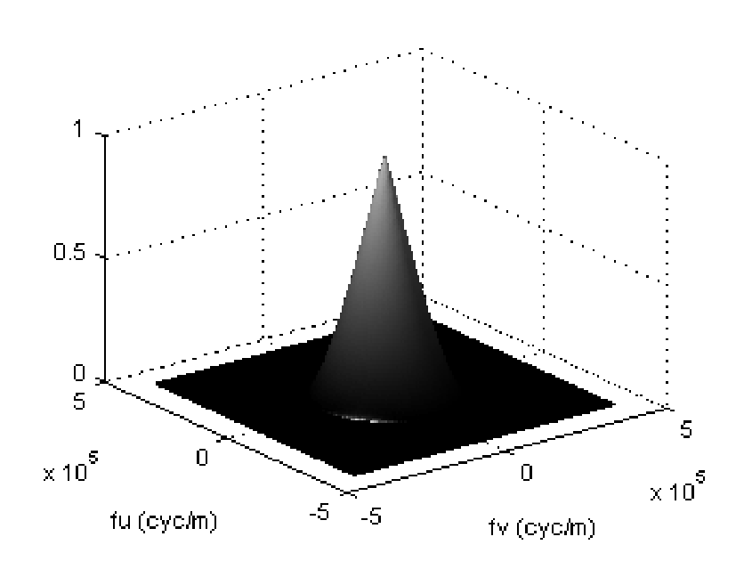
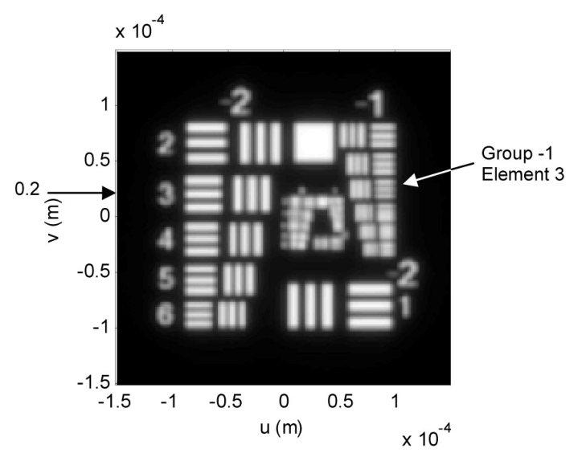
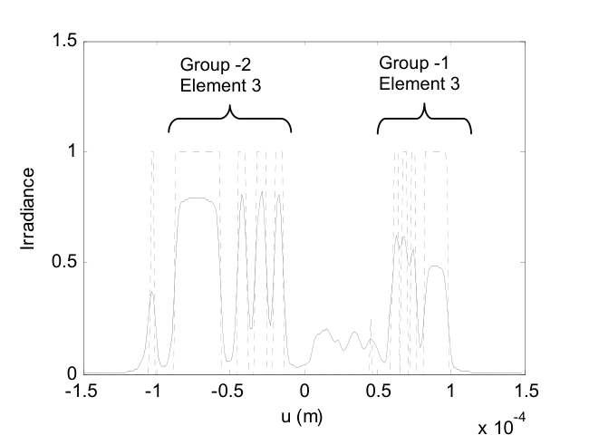
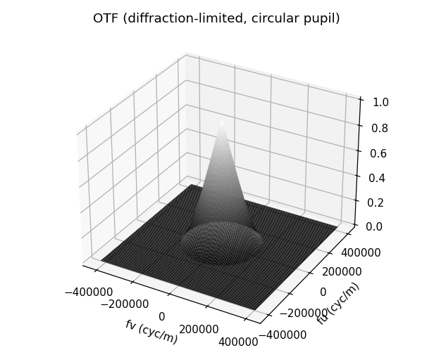
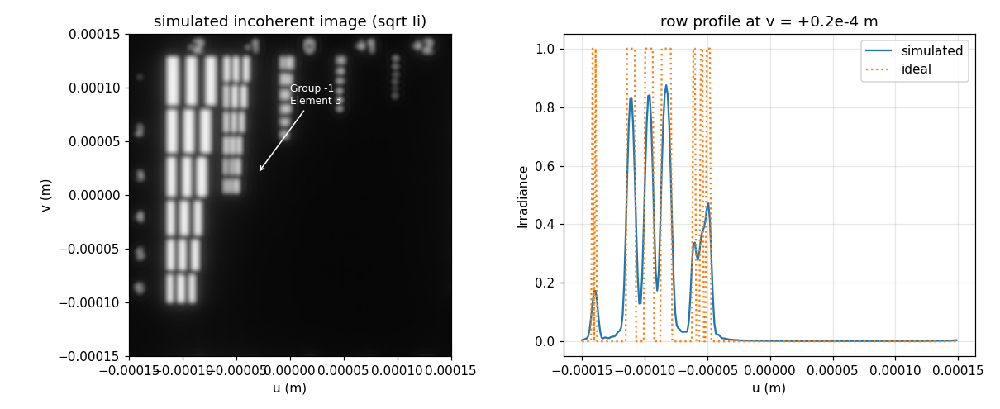
本章 Python 复现的定量检查(参数同书):
- OTF(0,0) = 1.000000(归一化);OTF 最小值 \(-2.5\times10^{-16}\)——衍射限 OTF 实且非负,数值上"踩零";
- OTF 支撑半径 = 2.000e5 cyc/m,与 \(2f_0\) 逐位一致;
- 解析对拍:FFT 自相关 OTF vs 式 (7.31) 圆瞳解析式最大差 3.25e-3;方瞳(式 7.29)最大差 1.63e-2(rect 边缘的 Gibbs,量级合理);
- 免缠绕演示(拓展):系统改 f/4(\(2f_0 = 5\times10^5 > f_N\)),FFT-OTF 与解析的最大差恶化到 7.87e-2——高频被周期副本污染(图 7-P9 右);
- 剖面里组-1/单元3(自制板 1.41e5 cyc/m)调制度 0.74(OTF 在该频率传函 0.18,条纹可辨认);同剖面组-2/单元3 调制度 0.96;无振铃:组-2/单元1 处最大值 0.883(相干像同处 1.50)。
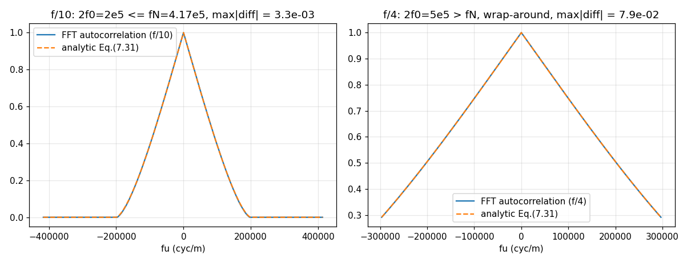
图 7.14 是与图 7.9 同系列的非相干像(f/5、f/10、f/20,谱按五次方根拉伸):这一组里非相干光明显改善图像质量。
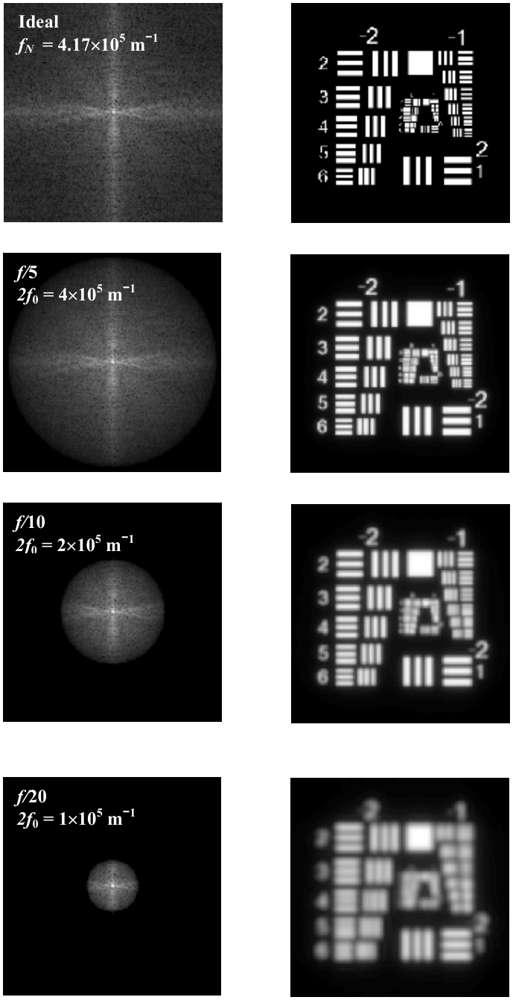
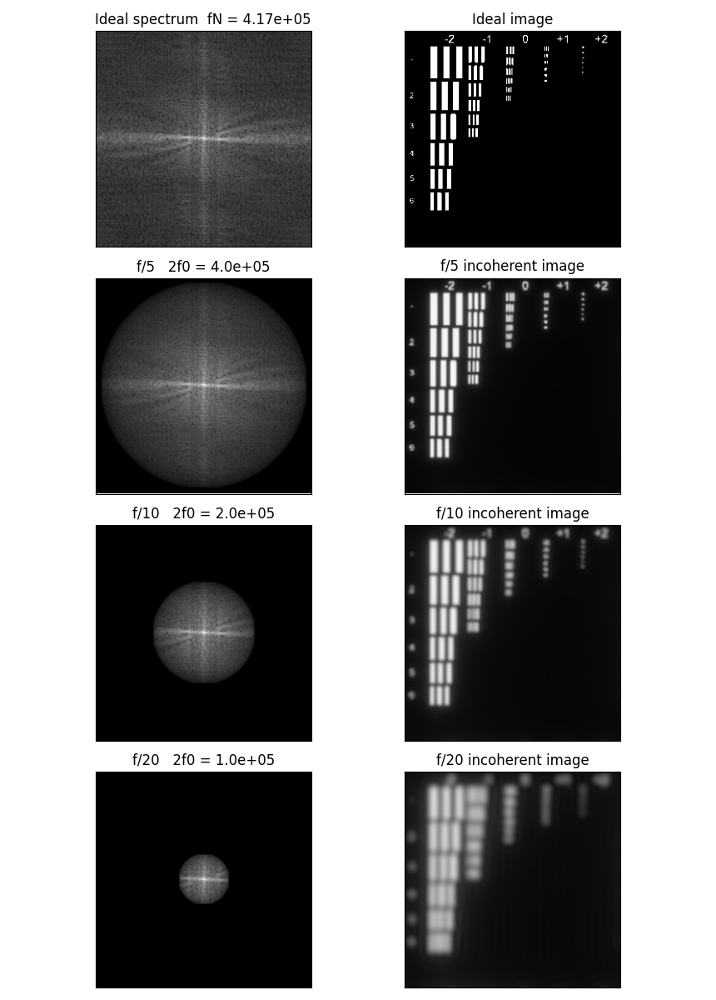
两条路径放在一起对照:
| 相干成像(7.2) | 非相干成像(7.3) | |
|---|---|---|
| 线性对象 | 场 \(U_i\)(式 7.4) | 辐照度 \(I_i\)(式 7.23) |
| 传递函数 | \(H = P(-\lambda z_{XP}f_U,\cdot)\)(式 7.7) | OTF = \(H\) 的零频归一自相关(式 7.25/7.26) |
| 圆瞳形状 | 硬边圆盘(式 7.13) | 平滑圆冠(式 7.31) |
| 截止频率 | \(f_0 = w_{XP}/(\lambda z_{XP})\)(式 7.10) | \(2f_0 = 1/(\lambda(f/\#))\)(式 7.15/7.32) |
| 振铃 | 有(边缘过冲实测 1.50) | 无(实测 0.88) |
| 粗糙表面 | speckle(7.2.4,实测 C≈1) | 平均掉(无) |
| 采样判据 | \(2f_0 \leq f_N\)(式 7.17),两场合用 | 同左 |
把"选哪条路、查哪条判据"画成决策流程图:
flowchart TD
A["要仿真成像(衍射限)"] --> B{"照明是相干还是非相干?"}
B -- "相干(激光)" --> C["场线性:Ui = h⊛Ug(式 7.4)<br/>H = 出瞳缩放反转(式 7.7)"]
B -- "非相干(自然光)" --> D["辐照度线性:Ii = PSF⊛Ig(式 7.23)<br/>OTF = H 的零频归一自相关(式 7.25)"]
C --> E{"出瞳形状?"}
D --> E
E -- "方/矩" --> E1["rect 通带;OTF = ΛΛ(式 7.29)<br/>注意 x/y 截止可不同(习题 7.3)"]
E -- "圆" --> E2["circ 通带;OTF = 圆冠式(7.31)<br/>截止 2f0 = 1/(λ f/#)"]
E -- "环" --> E3["环带:挖掉 DC/低频<br/>边缘增强(习题 7.4)"]
E1 --> F
E2 --> F
E3 --> F
F{"2f0 ≤ fN?(式 7.17;<br/>否则 OTF 的 FFT 自相关也会缠绕)"}
F -- "否" --> F1["du ≤ λ(f/#)/2(式 7.18)<br/>L ≤ M·λ(f/#)/2(式 7.19):加大 M 或缩小 L"]
F1 --> F
F -- "是" --> G["FFT 管线:谱乘 H/OTF → 逆变换<br/>(OTF 记得留在 FFT 排列!)"]
G --> H{"还想加什么?"}
H -- "粗糙表面" --> H1["乘随机相位 → speckle(7.2.4)<br/>对比度 C、颗粒 ~1.22λ(f/#)"]
H -- "相位物体" --> H2["相衬:DC 点乘 exp(jβ)(习题 7.9)"]
H -- "记录波前" --> H3["傅里叶全息:|FFT|² → IFFT(习题 7.10)"]
H -- "验证模型" --> H4["解析对拍:OTF 式 7.29/7.31、<br/>Airy PSF、Rayleigh 1.22λ(f/#)"]
H1 --> I["检查:截止半径、振铃、谱支撑、<br/>OTF 非负性"]
H2 --> I
H3 --> I
H4 --> I7.4 习题(原书)#
原书 10 道题。每题给题目与提示,本章做过数值的题附 Python 实测结果——先自己动手。
7.1 薄透镜成像:半径 10 mm、\(f = 50\) mm 的薄透镜,物在透镜前 200 mm。(a) 像距(后主面到像)多少?横向放大率?(b) \(D_{XP}\)、\(z_{XP}\)、\(f/\#\)?© 物距增大到 \(z_1 \gg f\),像距约多少?
7.1 参考答案要点
(a) \(1/z_2 = 1/50 - 1/200 = 3/200 \to z_2 = 66.7\) mm;\(M_t = -z_2/z_1 = -1/3\)(倒立缩小)。(b) 薄透镜瞳=透镜:\(D_{XP} = 20\) mm、\(z_{XP} = z_2 = 66.7\) mm、\(f/\# = 66.7/20 = 3.33\)。© \(1/z_2 = 1/f - 1/z_1 \to z_2 \to f = 50\) mm——物体移远,像收到焦面(这就是"无穷远聚焦在焦面"的极限,也解释了第 6 章 \(z_2 = f\) 时焦面 = 夫琅禾费图样)。
7.2 截止与采样:\(D_{XP} = 1/2\) in、\(z_{XP} = 4\) in、\(\lambda = 0.587\ \mu\text{m}\)。(a) \(f/\#\)?相干/非相干截止?(b) 衍射限仿真中理想图像的采样间隔要求?© 理想图像边长 1 mm 需要多少样本?
7.2 参考答案要点
(a) \(f/\# = 4/0.5 = 8\);\(f_0 = w_{XP}/(\lambda z_{XP}) = 1.06\times10^5\) cyc/m,\(2f_0 = 1/(\lambda(f/\#)) = 2.13\times10^5\) cyc/m。(b) \(\Delta u \leq \lambda(f/\#)/2 = 2.348\ \mu\text{m}\)。© \(M \geq L/\Delta u = 1\,\text{mm}/2.348\ \mu\text{m} = 425.9\)——至少 426 个样本(实用取 512)。
7.3 矩形出瞳:\(z_{XP} = 50\) mm、\(\lambda = 0.5\ \mu\text{m}\)、矩形 XP 半宽 \(w_x = 1\) mm、\(w_y = 0.5\) mm,\(L = 1\) mm、\(M = 250\)。(a) x/y 方向的相干与非相干截止?(b) 做相干成像仿真,给出相干传递函数曲面与像。© 做非相干成像仿真,给出 OTF 曲面与像。(d) x 与 y 方向的分辨率差异明显吗?
7.3 参考答案要点(Python 实测)
(a) \(f_{0x} = w_x/(\lambda z_{XP}) = 4\times10^4\)、\(f_{0y} = 2\times10^4\) cyc/m;非相干 \(2f_{0x} = 8\times10^4\)、\(2f_{0y} = 4\times10^4\)。(b) \(H = \mathrm{rect}(f_U/2f_{0x})\mathrm{rect}(f_V/2f_{0y})\) 方通带(曲面是"方柱");\(\Delta u = 4\ \mu\text{m}\) 对 u 方向判据 \(\leq 6.2\ \mu\text{m}\)、v 方向 \(\leq 12.5\ \mu\text{m}\),均满足。© OTF = 两个梯形之积(式 7.29 的 x/y 各异版本);实测像谱支撑 u 方向 8.000e4 = 2f0x、v 方向 4.000e4 = 2f0y,逐位一致。(d) 明显:本板条纹(映射到 L=1 mm)组-1/单元2 = 3.8e4 cyc/m < \(f_{0x}\)——u 向可分辨;组-2/单元3 = 2.1e4 > \(f_{0y}\)——v 向只到组-2/单元2(1.9e4)。竖条清晰、横向细节被抹掉(图 7-P7)。注意:书 coh_image 的 surf 轴标签互换在矩形瞳下必须改正,否则曲面和像的 x/y 标注就是反的。
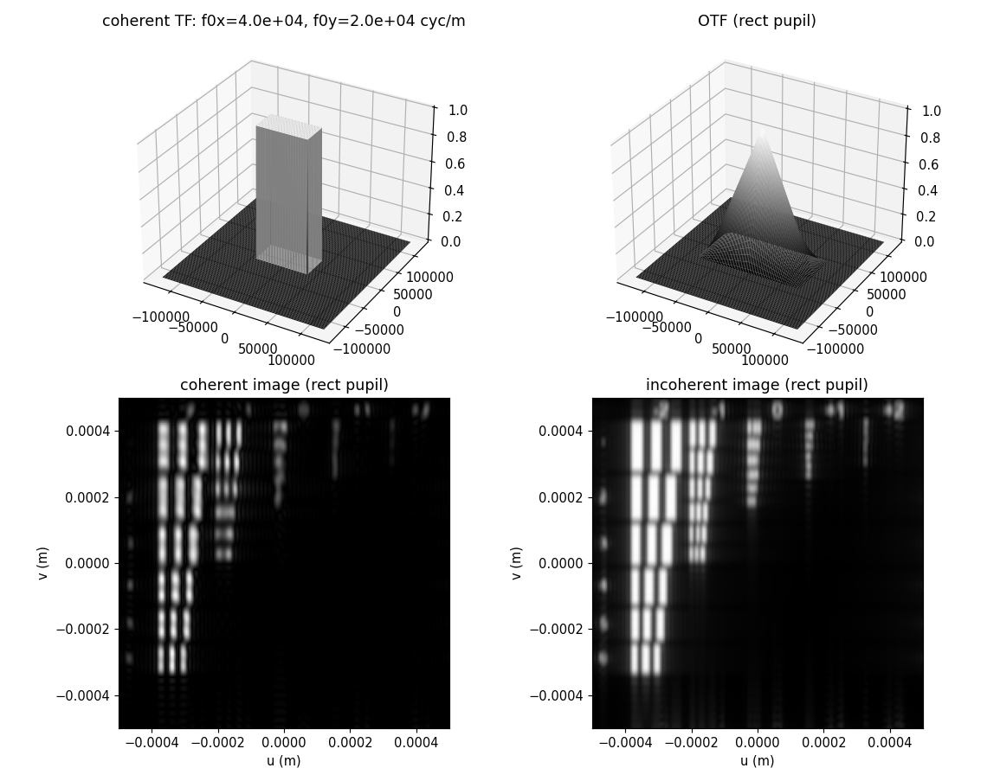
7.4 环形出瞳:\(z_{XP} = 50\) mm、\(\lambda = 0.5\ \mu\text{m}\)、环形 XP 外半径 \(w_o = 1\) mm、内半径 \(w_i = 0.5\) mm,\(L = 1\) mm、\(M = 250\)。(a) 相干/非相干截止?(b) 相干仿真(传递函数曲面 + 像)。© 非相干仿真(OTF 曲面 + 像)。(d) 相干传递函数丢掉 DC 与低频分量有什么影响?
7.4 参考答案要点(Python 实测)
(a) 相干截止由外半径决定:\(f_0 = w_o/(\lambda z_{XP}) = 4\times10^4\)(\(2f_0 = 8\times10^4\));内半径把 \(|f| < w_i/(\lambda z_{XP}) = 2\times10^4\) 的 DC 与低频整个挖掉。(b) 相干传递函数是"圆管";像呈边缘增强("伪相衬"外观):大条内部平均场从全孔径的 0.528 掉到 0.101——平坦区域的场被抽掉,只剩边缘贡献。© 环孔 OTF:零频处仍为 1,低频下陷、中高频相对占优——与全孔径之比实测低频(\(|f|\sim3\times10^4\) 处)0.48、中频(\(|f|\sim6\times10^4\) 处)1.29(图 7-P8)。(d) 丢 DC/低频 = 丢大尺度亮度信息:均匀区域成暗场、物体只剩"描边";这也是环孔望远镜"对比度换分辨率"的经典代价。
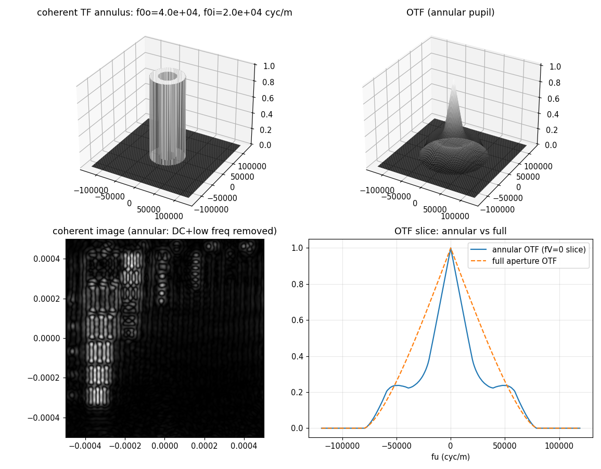
7.5 粗糙物体仿真(7.2.4 节):(a) 物体"没那么粗糙"时,把随机数函数的 \(2\pi\) 乘子调小,辐照度图像有什么变化?解释。(b) 改孔径大小对辐照度图像有什么影响?解释。
7.5 参考答案要点(Python 实测)
(a) 相位尺度 \(2\pi \to \pi \to 0.4\pi\):图像上的 speckle 变弱、测试板图案重新可辨(图 7-P13 上排)。定量:均匀物体实测对比度 \(C = \mathrm{std}/\langle I\rangle\) 从 0.998(充分发展 speckle,理论 1)断崖跌至 0.20(π)、0.03(0.4π)。解释:各点波前相位差变小,干涉起伏变弱——speckle 来自"随机相位差的相干叠加",相位差不随机了就没有斑。(b) 孔径变小(f/5 → f/20,图 7-P13 下排):对比度不变(C≈1),但颗粒变大——实测自相关过零 3.6/6.0/9.6 μm(±1 网格),与 \(1.22\lambda(f/\#) = 3.0/6.1/12.2\ \mu\text{m}\) 同级:颗粒线度就是 PSF 的宽度。
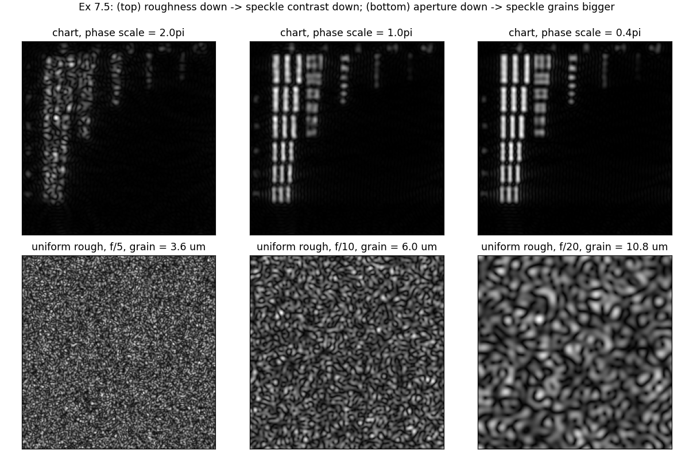
7.6 衍射限 PSF(Airy 图样):对式 (7.13) 的圆瞳相干传递函数:(a) 推导冲激响应 \(h(u,v)\);(b) 求非相干 PSF,证明它与式 (4.35) 的 Airy 图样同形;© 证明 Airy PSF 中央瓣全宽等于 \(2.44\lambda(f/\#)\)。
7.6 参考答案要点(Python 实测)
(a) \(h = \mathfrak{F}^{-1}\{\mathrm{circ}(\rho/f_0)\} = \pi f_0^2\,\dfrac{2J_1(2\pi f_0 u)}{2\pi f_0 u}\)(\(u = \sqrt{u^2+v^2}\);jinc 型,利用 \(H\) 实偶时 FT = IFT,数值上用居中 FT 配 \(\Delta f = 1/L\) 定标即可)。(b) \(\mathrm{PSF} = |h|^2 = (\pi f_0^2)^2[2J_1(v)/v]^2\),\(v = 2\pi f_0 u = \pi D u/(\lambda z_{XP})\)——与式 (4.35) 的 Airy 图样完全同形(第 6 章焦面图样的亲戚:无穷远物时 \(z_{XP} = f\))。© \(J_1\) 第一零点 \(v = 3.8317 \to u_0 = 0.61/f_0 = 1.22\lambda(f/\#)\),全宽 \(2u_0 = 2.44\lambda(f/\#)\)。实测(f/10):\(h(0)\) 差 0.65%(DFT 定标),第一零点(插值)6.14 μm(理论 6.10),PSF 与解析最大差 2.2e-3(图 7-P14 左、中)。
7.7 Rayleigh 分辨判据:截止频率意味着衍射限分辨能力,但度量分辨有多个指标(PSF、第 8 章的 MTF 等)。Rayleigh 判据:圆瞳衍射限系统对两个非相干点源"刚好分辨"——两点像间隔等于 Airy 中央瓣半宽。全宽 \(2.44\lambda(f/\#)\),取一半得 Rayleigh 距离
用 7.3.3 节的非相干系统做经验检验:选 \(w_{XP}\) 使 \(f/\# = 20\)。(a) 算 \(\delta\)。(b) 用例子的 \(\Delta u\),跨 \(\delta\) 需要几个样本 \(S\)?© 造一幅两个点源的理想图像,间隔 \(\delta\)(用数组下标操作更方便,如 Ig=zeros(M); Ig(M/2+1,M/2+1-S/2)=1; Ig(M/2+1,M/2+1+S/2)=1;)。(d) 跑成像仿真(\(f/\#=20\)),两点分辨开了吗?画剖面。
7.7 参考答案要点(Python 实测)
(a) \(\delta = 1.22\times0.5\ \mu\text{m}\times20 = 12.2\ \mu\text{m}\)。(b) \(S = 12.2/1.2 = 10.17 \to 10\) 个样本(间隔 12 μm,略小于 \(\delta\))。©(d) \(w_{XP} = z_{XP}/40 = 3.125\) mm(\(f_0 = 5\times10^4\)、\(2f_0 = 10^5\))。剖面两点峰之间有清晰凹陷:凹陷/峰 = 0.760——Airy 理论值 0.735(间隔 = 第一零点时中点强度/峰 = \(2[2J_1(1.916)/1.916]^2\)),"刚好分辨"(图 7-P14 右)。
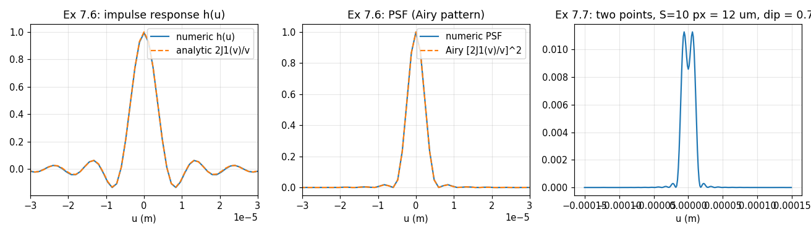
7.8 物空间:有时用物坐标讨论截止频率与分辨率更方便——比如地球成像卫星的分辨率按地面尺度说。把像面参考的公式换成物面参考,只需把像方 \(f/\#\) 换成物方 f 数
轨道高度 700 km 的卫星望远镜指向地面,主镜直径 1 m(主镜 = 入瞳),\(\lambda = 0.5\ \mu\text{m}\)。(a) \(f/\#_{OBJ}\)?(b) 非相干截止频率与 Rayleigh 分辨距离 \(\delta\)?© 物面仿真的最大采样间隔?对应 \(1024\times1024\) 阵列的物面边长?
7.8 参考答案要点
(a) \(f/\#_{OBJ} = z_{EP}/D_{EP} = 700\times10^3/1 = 7\times10^5\)。(b) 非相干截止 \(2f_0 = 1/(\lambda(f/\#_{OBJ})) = 2.86\) cyc/m;Rayleigh \(\delta = 1.22\lambda(f/\#_{OBJ}) = 0.427\) m——星载相机"半米级分辨率"就是这么来的。© \(\Delta u \leq \lambda(f/\#_{OBJ})/2 = 0.175\) m;\(1024^2\) 阵列 → \(L \leq 179\) m。注意 0.175 m 的采样间隔只覆盖 179 m 的地面条带——与 7.2.3 节"衍射限仿真只看小块"同一件事在物方的重演。
7.9 相衬成像(Phase Contrast Imaging):活细胞、微生物、光刻图形这类物体基本透明,只是各处折射率不同——普通(辐照度)成像看不见它们。相衬成像(phase contrast)把物体产生的小相位变化(光程差)转成可探测的辐照度变化,常用于显微。参见 Ersoy 或 Hecht[6,7]。装置见图 7.15:透镜 1(焦距 \(f\))对相位物体做光学傅里叶变换[见式 (6.19)],用相位"点"板改变变换场的 DC 部分,透镜 2 再做一次变换成像。思路:用相位板把物场平均部分相移一小段波长(通常 \(\pi/2\) 或 \(3\pi/2\)),平均场与相位调制场在像面干涉,把相位变化翻译成辐照度变化。按以下步骤写代码:
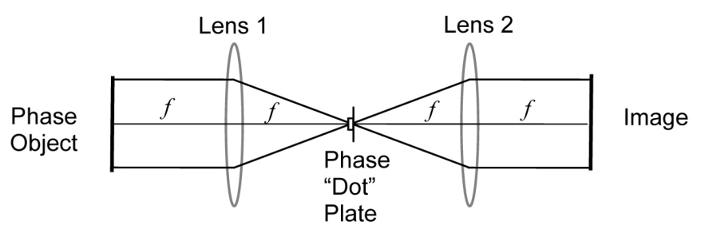
(a) 按 coh_image 读入测试板,转成单位幅度相位物体:\(\theta=\sqrt{I_g}\cdot\pi/100\);\(u_g=\exp(j\theta)\)。(b) 直接算这个物体的辐照度(模平方)并用 imagesc 观察,再看剖面——应该是常数 1。不过 imagesc 会把全图数值范围拉伸到 256 灰阶,数值误差的痕迹可能隐约可见,但绝对变化极小。© 设物体被单位振幅波背照明,模拟透镜 1(对相位物体做 FFT;坐标与幅度定标忽略)。把 DC 点乘 \(\exp(j\beta)\),\(\beta = \pi/2\),再做逆 FFT 模拟透镜 2(透镜 2 实际做正变换、像相对物旋转 180°,仿真里用逆 FFT 保持方向与物一致)。看像的辐照度与剖面:结果应近似 \(I_i(x,y) \approx 1+2\theta(x,y)\)。\(\beta = \pi/2\) 叫正相衬模式。(d) 换 \(\beta = 3\pi/2\)(负相衬模式),验证 \(I_i \approx 1-2\theta\)。(e) 试其他 \(\beta\) 值,改变 \(\beta\) 有什么效果?
7.9 参考答案要点(Python 实测)
(b) 直接辐照度 = 1(最大偏离 \(4.4\times10^{-16}\),浮点级)——相位物体"隐形"。© \(\beta=\pi/2\) 正相衬:条纹上 1.0592、条纹外 0.9955,差 \(+0.0637 \approx 2\theta = 0.0628\)——公式 \(I_i \approx 1+2\theta\) 说的正是"条纹-背景之差"。(d) \(\beta=3\pi/2\):条纹上 0.9424、条纹外 1.0043,差 \(-0.0620\)——负相衬,衬度反转(图 7-P11)。(e) \(\beta=\pi\):DC 反相,线性衬度消失,只剩二阶小量(\(\max|I_i-1| = 1.6\times10^{-3} \sim \theta^2\));\(\beta=0\):\(I_i\) 恒为 1。物理解释:\(\exp(j\theta) \approx 1 + j\theta\),DC 是"平均场";给 DC 乘 \(j\) 后它与相位散射场同相,相长干涉 → \(1+2\theta\);乘 \(-j\) 则相消 → \(1-2\theta\);乘 \(-1\) 就既不同相也不反相,翻译不出线性衬度。
拓展:相衬的"平均场修正"
严格算一笔账:\(u_i = u_g + (e^{j\beta}-1)\langle u_g\rangle\)(DC 项被替换成 \(e^{j\beta}\langle u_g\rangle\))。对二值板,\(\langle u_g\rangle \approx 1 + j f̄ \theta_0\)(\(f̄\) 是条形占空比)——平均场自带一点相位。所以条纹上的实测值是 1.059 而不是理想线的 1.063、背景是 0.996 而不是 1.000:"差 = 2θ"精确成立,"绝对值骑在 ⟨ug⟩ 上"。教科书公式都默认 ⟨θ⟩≈0,真实图案要留这个余量。
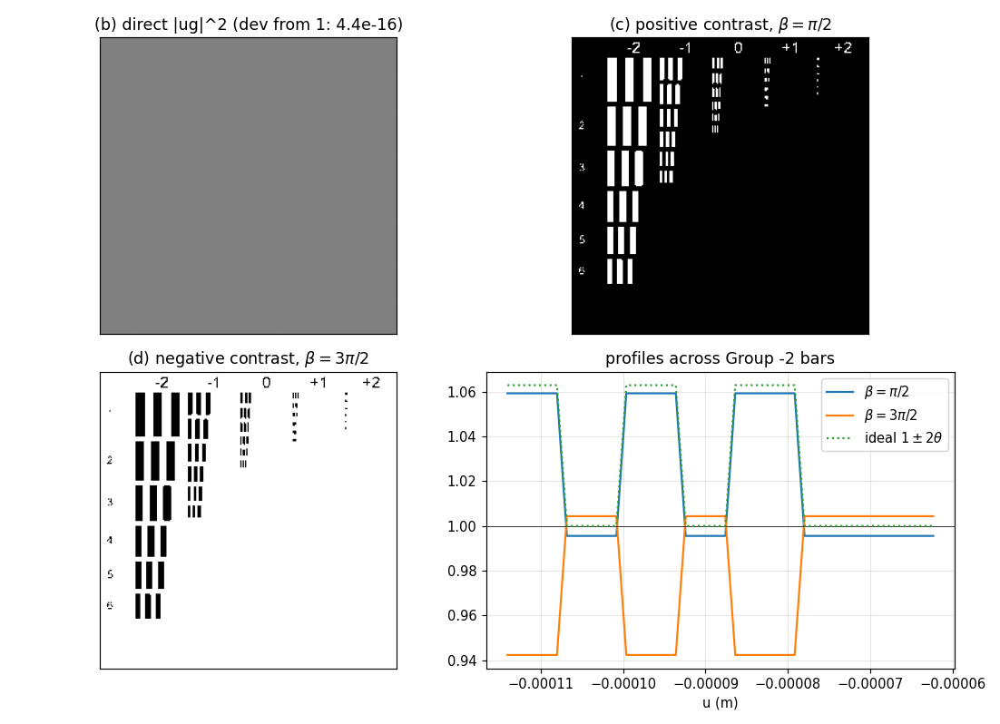
7.10 全息术(Holography):全息指一种辐照度记录(传统上在胶片上),"回放"时能重建物体的光场——重建场让观察者看到真物体的部分特性,比如 3D 深度。这里考虑一种傅里叶全息图(Fourier hologram)(图 7.16)。记录:物体被相干光(通常是平面波)照明;物体旁边一个小球面镜截获部分照明光,把球面波送回透镜——镜子实际上扮演参考点源。照明物体 + 点源的夫琅禾费图样由透镜产生在胶片面上;胶片记录辐照度并处理成透过率与辐照度成正比。回放:胶片被相干平面波照明,透镜对透射波前做傅里叶变换形成像。按以下步骤仿真:
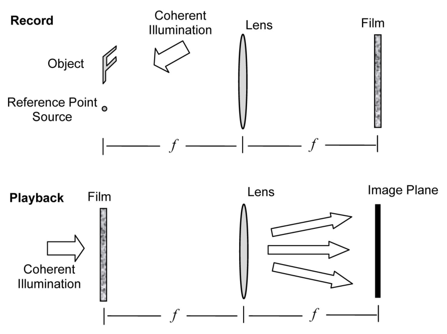
(a) 用 \(M = 500\)、\(L = 10\) mm 定义物体阵列坐标;用移位的 rect 函数和 udelta 函数按图 7.17 造物体与点源,显示检查布局。(b) 点源乘 1000——亮参考有利于造全息图。© 模拟记录透镜:直接对物体阵列做 FFT(坐标与幅度定标忽略);取模平方模拟胶片的辐照度记录。(d) 回放设胶片被单位振幅平面波照明(无需操作);对 © 的结果做逆 FFT 得像面(可能还要考虑 fftshift;回放透镜实际做正变换、像旋转 180°,用逆 FFT 保持方向与物一致)。(e) (d) 的结果里有一个"光轴上"的亮点——回放光束里穿过胶片后仍是平面波的那部分能量,显示干扰大,置零。(f) 显示最终图像。
傅里叶全息图产生:物体的像、"共轭"像、以及中间一个自相关相关的结果。几个思考题:如果撤掉回放透镜、把眼睛放到合适位置,你能只看到物体的像吗?你认出这个傅里叶全息过程就是傅里叶自相关定理的实现了吗?
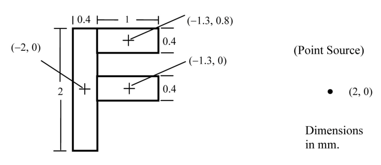
% ===== 书习题 7.10:傅里叶全息(骨架 + 关键行;udelta 见本目录) =====
% Python 实跑:python/fourier/ch7/ch7_exercises.py(图 7-P12)
M=500; L=10e-3; dx=L/M;
x=-L/2:dx:L/2-dx; [X,Y]=meshgrid(x,x);
mm=1e-3;
% (a) F 形物体(尺寸见书图 7.17)+ (b) 参考点源(2,0) mm x1000
u1=rect((X+2.0*mm)/(0.4*mm)).*rect(Y/(2.0*mm))... %竖梁
+rect((X+1.3*mm)/(1.0*mm)).*rect((Y-0.8*mm)/(0.4*mm))... %上臂
+rect((X+1.3*mm)/(1.0*mm)).*rect(Y/(0.4*mm)); %中臂
u1=u1+1000*udelta((X-2.0*mm)/dx).*udelta(Y/dx); %点源 x1000
% (c) 记录:透镜 = FFT;胶片 = |.|^2
G=fft2(u1); T=abs(G).^2;
% (d)(e) 回放:逆 FFT(保方向);轴上亮点(DC)置零
P=ifft2(T); P(1,1)=0;
% (f) 显示:imagesc(x*1e3,x*1e3,fftshift(abs(P)))
# ===== 书习题 7.10(完整脚本见 python/fourier/ch7/ch7_exercises.py) =====
from ch7_imaging import udelta # 附录 C.6(公共积木)
M0, L0 = 500, 10e-3
dx0 = L0 / M0 # 0.02 mm
x0v, _ = coords(L0, M0)
X0, Y0 = np.meshgrid(x0v, x0v)
mm = 1e-3
object10 = (rect((X0 + 2.0*mm) / (0.4*mm)) * rect(Y0 / (2.0*mm)) # 竖梁
+ rect((X0 + 1.3*mm) / (1.0*mm)) * rect((Y0 - 0.8*mm) / (0.4*mm))
+ rect((X0 + 1.3*mm) / (1.0*mm)) * rect(Y0 / (0.4*mm)))
point10 = 1000.0 * udelta((X0 - 2.0*mm) / dx0) * udelta(Y0 / dx0)
u1_10 = object10 + point10 # (a)(b)
G10 = np.fft.fft2(u1_10) # (c) 记录透镜 = FFT
T10 = np.abs(G10) ** 2 # 胶片辐照度
P10 = np.fft.ifft2(T10) # (d) 回放(逆 FFT 保方向)
P10[0, 0] = 0.0 # (e) 轴上亮点 = DC,清零(MATLAB 是 P(1,1))
实测结果(图 7-P16):回放场由四部分组成——真像(F 形,中心 \(-1.5-2 = -3.5\) mm;与物体窗口的归一化互相关 +1.000)、共轭像(180° 翻转的 F,中心 \(+3.5\) mm;与翻转物体的互相关 +0.929)、中间的物体自相关宽包络、以及已清零的轴上亮点(\(R^2\delta\),回放中仍是平面波的那部分)。思考题的答案也在这个分解里:回放场 \(= \mathrm{IFT}\{|\mathcal{F}\{u_1\}|^2\} = u_1 \circledast u_1\)(傅里叶自相关定理),而 \((O + R\delta)\circledast(O + R\delta) = O\circledast O + R\,O(x+x_0) + R\,O^*(x_0-x) + R^2\delta\)——全息记录/回放就是自相关定理的物理实现;撤掉回放透镜,衍射阶不分开,各个分量叠在一起,眼睛放哪都只能看到混合像。
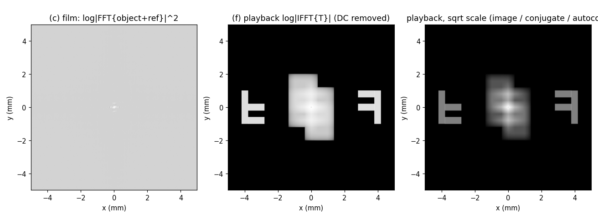
坑与陷阱#
circ 的两套约定:式 (7.11) 按 Goodman,表 1.2 差 2 倍
式 (7.11) \(P=\mathrm{circ}(r/w_{XP})\) 与代码 H=circ(sqrt(Fu.^2+Fv.^2)/f0) 里,宗量分母就是半径(附录 C.1 out=abs(r)<=1 印证);表 1.2 的印刷定义对应"分母 = 2×半径"(ch1 勘误)。照表 1.2 实现,瞳大一倍、\(f_0\) 变 \(2f_0\)、整幅像的模糊程度全错。本笔记统一:Python base.circle(X, Y, R) 传半径,MATLAB circ.m 按附录 C.1 原样(宗量预除半径)。
surf 的轴标签与数据映射相反(书代码)
书 coh_image 第 30/34 行:surf(fu,fv,H) 后接 ylabel('fu'); xlabel('fv')——surf 的第一参数 \(f_u\) 落在 x 轴,标签却是 fv。圆瞳下 \(H\) 各向同性,看不出来;矩形瞳(习题 7.3)曲面和像的 x/y 就会标反。本笔记的 MATLAB 文件已按正确映射写;Python 侧 matplotlib plot_surface(FU, FV, ...) 的 x 轴对应 FU,同样要注意。
OTF 的排列:书故意不 fftshift
OTF=ifft2(abs(fft2(fftshift(H))).^2); OTF=OTF/OTF(1,1); 的输出留在 FFT 排列(\(f=0\) 在角上),正好与 fft2(fftshift(Ig)) 的排列一致,可以直接逐点相乘。手痒给 OTF 加一个 fftshift 再去乘,或者用 OTF(1,1) 之外的样本归一,像就会错乱/变暗。MATLAB 的 OTF(1,1) 是 1-based 零频样本,numpy 写 OTF[0,0]。
判据 7.17 是两件事合一只:2f₀ ≤ f_N
它既保证辐照度的频率(到 \(2f_0\))能被网格表示(平方会翻倍频谱),又保证 7.3.3 节用 FFT 算 OTF 自相关时不缠绕(循环自相关的副本间距 \(1/\Delta u\),免重叠条件整理后正是 \(2f_0 \leq f_N\))。实测违反它(f/4)时 FFT-OTF 与解析差 25 倍(3.3e-3 → 7.9e-2)。另一个方向也别忘了:理想图像里没有的频率仿真造不出来,所以 \(L \leq M\lambda(f/\#)/2\) 限制的是"能仿真的像面大小"——f/10、250 阵列只有 0.625 mm。
相干像的"表观分辨率"≈ f₀,不是 2f₀
辐照度平方让频谱翻倍没错(实测支撑逐位 = 2f₀),但二值测试板的相干辐照度像里,可辨认条纹的周期贴近相干截止 \(f_0\)(书判读、笔记实测都是 1e5 cyc/m 一档)。判断"能不能分辨"时用哪个截止,先问自己看的是场(相干,到 \(f_0\))还是强度条纹的对比(干涉项在两个谱分量的差频,典型也在 \(f_0\) 附近)——以及理想图像里到底有没有那个频率。
非相干仿真要"洗"数值噪声
Ii=real(Ii); mask=Ii>=0; Ii=mask.*Ii; 不是可有可无的洁癖:OTF 卷积输出的 \(I_i\) 理论上正实,但浮点误差会留 \(10^{-16}\) 量级的虚部/负值,imagesc/plot 直接报错或出怪图。相干仿真(\(|u_i|^2\))天然实、非负,没有这一步。
speckle 仿真的随机数:统计一致,像素不同
rand/default_rng 的序列与原书不同,复现的 speckle 图样逐像素对不上原书图 7.10——这是随机相位仿真的固有性质,别当成 bug。要报告数字(对比度、颗粒宽度)时固定种子。另外定量对比度要用均匀照明物体测:在测试板上直接算 std/mean,条形结构和边缘会把它污染到 1.5+ 而与粗糙度无关(笔记实测踩过)。
习题 7.9 的 DC 点与单位制
相衬里"DC 点"是 fft2(ug) 的 \([0,0]\) 号样本(MATLAB (1,1)、numpy [0,0]),与数据是不是居中排列无关——DFT 的零频永远在 0 号 bin。习题 7.10 同理:P(1,1)=0 清的是回放场的轴上亮点。还有 mm/m 混用:7.10 的坐标以 mm 画图、以 m 计算,窗口切片里写 round(2.2/dx0) 而不是 round(2.2e-3/dx0),切片直接变空数组(notes 里这条是实测踩出来的)。
速览#
- 成像仿真三件套:理想几何像 \(U_g = \frac{1}{|M_t|}U_o(u/M_t, v/M_t)\)(式 7.5)、相干冲激响应卷积(式 7.4)、传递函数 \(H = P(-\lambda z_{XP}f_U, -\lambda z_{XP}f_V)\)(式 7.7)——瞳的缩放反转。
- 几何骨架:透镜定律(式 7.1)、\(M_t = -z_2/z_1\)(式 7.2)、工作 \(f/\# = z_{XP}/D_{XP}\)(式 7.3);孔径光阑决定像的基本衍射极限。
- 相干截止 \(f_0 = w_{XP}/(\lambda z_{XP})\)(式 7.10);辐照度平方使频率翻倍:非相干截止 \(2f_0 = 1/(\lambda(f/\#))\)(式 7.14/7.15/7.32)——实测谱支撑逐位等于 \(f_0\) 与 \(2f_0\)。
- 采样判据 \(2f_0 \leq f_N\)(式 7.17)→ \(\Delta u \leq \lambda(f/\#)/2\)、\(L \leq M\lambda(f/\#)/2\)(式 7.18/7.19):f/10、250² 阵列只能仿 0.625 mm 的像面;它同时是 FFT 自相关免缠绕条件(违反时 OTF 误差 ×25)。
- 相干像:模糊 + 振铃(边缘过冲实测 1.50)+ 粗糙表面 speckle(充分发展 \(C=\mathrm{std}/\langle I\rangle = 0.998 \approx 1\))。
- 非相干像:对辐照度线性,OTF = \(H\) 的零频归一自相关(式 7.25/7.26);方瞳 = ΛΛ(式 7.29),圆瞳 = 平滑圆冠(式 7.31);无振铃(0.88 vs 1.50)、无 speckle。
- OTF 数值:FFT 自相关留在 FFT 排列直接乘(书第 22-23 行),除 OTF(1,1) 归一;负值/虚部清零(第 36 行)。
- 习题全家桶:矩形瞳各向异性(谱支撑 8e4/4e4 逐位)、环瞳边缘增强(条内场 0.53→0.10,OTF 低频 0.48/中频 1.29)、PSF = Airy(第一零点 6.14 vs 6.10 μm)、Rayleigh 双点凹陷 0.760(理论 0.735)、相衬 ±2θ(+0.064/−0.062)、傅里叶全息 = 自相关定理(真像 NCC +1.000、共轭 +0.929)。
- 物方口径(习题 7.8):\(f/\#_{OBJ} = z_{EP}/D_{EP}\),700 km + 1 m 镜 → δ = 0.427 m、\(L \leq 179\) m(1024²)。
- 工程提示:USAF 板原书下载已失效,笔记用锚定版自制 PNG;MATLAB 7.1 的
H.*.99显示补丁新版可删;surf 轴标签书代码标反(圆瞳无害、矩形瞳致错)。
术语速查#
| 英文 | 中文 | 一句话 |
|---|---|---|
| image plane / object plane | 像面 / 物面 | 坐标 \((u,v)\) / \((x,y)\)(图 7.4) |
| Gaussian lens law | 透镜定律(高斯形式) | \(1/f = 1/z_1 + 1/z_2\)(式 7.1) |
| principal plane | 主平面 | 单位放大率的虚拟平面(式 7.1) |
| transverse magnification \(M_t\) | 横向放大率 | \(y_2/y_1 = -z_2/z_1\),负 = 倒像(式 7.2) |
| aperture stop | 孔径光阑 | 限制收光的真实元件;"饼干模",衍射极限来源 |
| entrance / exit pupil (EP/XP) | 入瞳 / 出瞳 | 光阑经前/后元件成的像;衍射分析用它(图 7.2) |
| working f-number | 傍轴工作 f 数 | \(z_{XP}/D_{XP}\)(式 7.3);有限共轭下别用 \(f/D\) |
| coherent impulse response \(h\) | 相干冲激响应 | 式 (7.4) 的卷积核 |
| ideal geometrical image \(U_g\) | 理想几何像场 | 物场的缩放倒像(式 7.5) |
| coherent transfer function \(H\) | 相干传递函数 | \(P(-\lambda z_{XP}f_U,\cdot)\)(式 7.7);又名振幅传递函数 |
| coherent cutoff \(f_0\) | 相干截止频率 | \(w_{XP}/(\lambda z_{XP})\)(式 7.10) |
| diffraction limited | 衍射限 | 瞳函数完美,只有边界参与衍射 |
| point spread function (PSF) | 点扩散函数 | ( |
| optical transfer function (OTF) | 光学传递函数 | \(H\) 的零频归一自相关(式 7.25/7.26);DC=1 |
| incoherent cutoff \(2f_0\) | 非相干截止频率 | \(1/(\lambda(f/\#))\)(式 7.30/7.32),相干的两倍 |
| speckle | 相干斑 | 随机粗糙面的相干干涉;充分发展 C=1(图 7.10) |
| USAF 1951 test chart | USAF 1951 分辨率板 | 三条组靶;组/单元 ×2^(⅙) 标尺(图 7.5) |
| Rayleigh criterion | Rayleigh 判据 | 双点刚可分辨:间隔 \(1.22\lambda(f/\#)\)(习题 7.7) |
| object-space f/# | 物方 f 数 | \(z_{EP}/D_{EP}\)(习题 7.8);卫星分辨率按地面说 |
| phase contrast | 相衬成像 | 相位板移 DC,把相位变辐照度 \(1\pm2\theta\)(习题 7.9) |
| Fourier hologram | 傅里叶全息图 | 记录 |FFT(物+参考点)|²,回放 IFFT;= 自相关定理(习题 7.10) |
| conjugate image | 共轭像 | 全息回放里 180° 翻转的复共轭像(±x₀ 两阶) |
| udelta | 单位样本 delta | 坐标整值处置 1(附录 C.6);点源用 |